Crowd Dynamics
Motivation
So in my third semester one of my Fluid Mechanics professor Prof. Naveen Tiwari taught us ESO204, which is an introductory course on fluid mechanics. And after studying that course, I also watched the lectures of Prof. Sanjay Mittal, who supervised me in this project in crowd dynamics. I watched his lectures on YouTube, and I loved those lectures. In the course, however, Professor Naveen Tiwari also mentioned that "Fluid could also be used to model crowds," and that sentence kind of stuck with me. Because when studying fluid, if someone tells you what you are studying is also how crowds behave, you may be left thinking about this idea. It was very intriguing for me to think about people as particles of fluid. And I kind of thought it is not at all a bad way to compare. I mean, when in a dense crowd, I could imagine that I really don't have any control over myself (just like fluid). By which I mean, one loses his individuality and just goes where the crowd takes it. Just like the fluid flowing.
About a year later, I happened to go to a Jyotirlinga temple in Omkareshwar, in Madhya Pradesh, where I truly experienced the crowd in its true sense. I mean, as far as I could remember, this might be the most brutal crowd I had ever experienced. That was the first trigger point which led me to crowd dynamics. Later in the summer of 2025, I thought of working in this field, and got to know that there are different softwares made to simulate the flow of crowd in microscopic point of view, (meaning to model each pedestrian individually). But I found the papers back then to be a bit difficult. So I thought maybe this is not the time for me to work on this.
Then during the add-drop period (which is the period where students could add or drop a course during the registration in a semester), I found that we had a UGP (Undergraduate Project) in our template in the 7th semester. And this gave me another hope to start my work in crowd dynamics. And then I met Prof. Sanjay Mittal and discussed with him these ideas. I knew that he had worked in the feild of traffic flows, which is similar to crowd dynamics, but for vehicles and traffic.
UGP 1
Meeting 1
Meeting 1
The first meeting was about formulating the problem. Back then I found that formulating the problem itself is the most difficult part of the project. I came up with some very bizarre ideas like simulating the crowd on the path of temples and seeing how the people moved in the twisty paths of temples, etc. After the discussion, I was very clear that "Just because I want to do something doesn't mean that I should straight away start doing it". Now if I think about all that, I ask myself what I really wanted to do? I mean, I could simulate the crowd, but then what? So I found that I lacked a clear objective.
I was given the following paper and told to come up with a clear objective.
Here are the papers : Traffic Flows, Hughe's Flow
These were the paper suggested.
Meeting 2
Meeting 2
In this section I finally made the big move, and here is my First Report that I made. This was made after we had a discussion on the traffic flows, and how we could relate the traffic flow with crowd dynamics. Now this still needed somewhat discussion. Reading through the report, I feel I was still a naive thinker. My objectives were still not satisfactory. But one thing that I need to specify is that I still feel that the second objective has some potential. I mean, this idea (which was also suggested by Professor) came from the understanding that the flow moving through a CD nozzle will choke at some point. And therefore sir said that "If there is one pedestrian moving into the entrance there is no problem, and everyone entering will have absolutely no problem in moving through the paths. But if there are all the people jammed inside the path, we see no motion of people. So there must be a value of inflow rate of people where something like choking must be happening." Even till now when Meeting 7 has been done, I still think that this is a good subject.
Here is one more paper that porfessor recommnended, Here
This was said to me as a paper that has implements the hughe;s flow numerically.
Meeting 3
Meeting 3
So in the next week I made the This report. And this was the first turning point in my project. I implemented my first code for the hughe's flow. Although it wasn't that good but was considerable amount of progress.
Here are the results:
The results to me looked very senseless, but nevertheless at least I had something. Since my results made no sense, I now had to do the following. I had to validate the methods that I have used in this project, and this includes the Fast Sweep Method and the method used for advection. So for the advection, I have used the simple upwinding, and to validate the fast sweep I decided to replicate and spend some time understanding the eikonal equation. I have used this paper for that. So now the objective for my next lab was to work on the FAST SWEEP METHOD. Also, in the fast sweep, they have tried using the distance function, so for that, I read about this paper about the distance equation. Here
Meeting 4
Meeting 4
Here is the Report_1 (Hughe's Flow) and Report_2 (Eikonal Equation) for this meeting that I made. And here my task was to use some synthetic function and use it to test how good the algorithm is to solve the Eikonal equation. And so I did the same as mentioned in the paper. But one problem was that I checked the validity of this algorithm on a problem that contained Dirichlet condition on the boundary, which was not the case with my project. So this gave me the objective for my next lab that is to apply the well posed Neumann boundary condition on the problem and then use the algorithm in the main Hughe's flow solver. He tried to explain that using an algorithm that we don't fully understand should not be used until it is fully validated. So now my next task was to again validate the fast sweep method but this time for Neumann condition.
In addition to that I was also asked to make a toy problem and see if the advection equation is really working. So what he tried explaining me was that "If I am unable to solve the problem all at once, try breaking it into fragments (which is advection and fast sweep) and see if they work fine individually."
Shown below are some results:
Meeting 5
Meeting 5
Here is the Report 1 (Hughe's Flow) and Report 2 (Fast Sweep Method) of this meeting. Here I realised that the paper doesn't really discuss about implementing the FAST SWEEP METHOD on the problems containing Neumann boundary condition. And thus this needs to be fixed. As mentioned in the paper, I used the Ghost point approach and somehow tried coming up with the solution, and then used that understanding of fast sweep into Hughe's flow solver.
So now I was implementing Lax Wendroff scheme for advection because what I saw was that first order upwinding scheme had lots of numeric diffusion, and the Lax Wendroff was better in all the sense except that it had many numerical oscillations that were explained to be Gibbs oscillation occurring due to sharp discontinuity at the tip of discontinuity (Fourier transformation). And the results were also not very appreciable. They still looked like something really wrong is going on with them. And then the suggestion was "Why not start with a simple one dimensional problem and then see if it's working. It will be easier to study one dimensional flow compared to two dimensional." And so the next task was to simulate the Hughe's flow in one dimension.
Meeting 6
Meeting 6
Here is the Here of my progress.
Now at the first instant I thought I still messed up the problem. I used the ghost point approach to implement Neumann condition on \(\phi\) while solving Eikonal equation using Fast Sweep Method. And while doing so I also implemented Lax Wendroff scheme for advection in the density. The results were not very good, and I still was not at all satisfied.
Here are the results for your understanding
/Initial_Density_Distribution.png)
All of these didn't go well, and there were some problem that professor said me about :
- The initial condition taken was not at all good. Since I have been for all this time taking the initial condition containing sharp discontinuities in the density. And since my problem contained shocks due to non linear advection equation with velocity proportional to negative of density, sir said it would be better to pick the boundary condition which was too close to the minimum or maximum value of density.
- Also I was trimming the density if it ever exceeded the maximum value, this seemed to cause problem since in that case I would be solving a very different problem all together.
After making the changes in the initial condition all of a sudden the result started to make sense. A boundary condition of \(\rho = 0\) at the boundary for no inflow and the formation of shock due to crowd behind the peak having higher velocity, all of it was working just fine. Given below are the results
This made it clear that the problem was in the type of intial condition I was implementing really, and not in anything else. So now it was about extending to two dimension, from where I came.
Meeting 7
Meeting 7
Now it was about making the two dimensional flows. And here is the Report
Here I went in all the direction and tried many different problems. given below are all the problems :
| Problem | Initial Condition | Density | Potential | Velocity |
|---|---|---|---|---|
| Standard Exmaple |
/Standard_Example/IMG_20251017_001838.jpg)
|
|||
| Two Blob | ||||
| Unsymmetrical Exit | ||||
| Multi-Exit Problem - 1 |
/Multi_Exit_Problem_1/IMG_20251017_002514.jpg)
|
|||
| Multi-Exit problem |
/Multi_Exit_Problem_2/IMG_20251017_003527.jpg)
|
After the meeting there were two things that came into notice. That the boundary condition on density was not being respected, and also professor said me to compare the solution with some paper that actually solves a problem of Hughe's flow, because this might be helpful to validate the methods I am using to solve the problem. And so my next task was to replicate the result of This paper.
Meeting 8
Meeting 8
This work is based on a paper employing WENO schemes, using a third-order WENO fast sweeping method to solve the Eikonal equation and a fifth-order WENO scheme for the density advection equation; these are highly sophisticated numerical methods, and the problem further involves an internal obstacle whose accurate numerical modeling is non-trivial, with the exact implementation detailed in this report, while the reference paper can be found here.
Using the method for modelling the obstacle I tried some of my own problems out of curiosity an dthye are shown below.
| Problem | Density | Potential |
|---|---|---|
| Obstacle 1 | ||
| Obstacle 2 | ||
| Intelligent Crowd |
And looking at the results I am not at all disappointed. At least all the result made sense. Just the boundary condition has to be taken care of later.
So with that understanding I tried implementing the exact same problem which was done in the paper, and the result of which are shown below. When comparing them with that of the paper, they were not at all similar. The results in paper was very different. And following were the problem that we thought.
And looking at the results I am not at all disappointed. At least all the results made sense. Just the boundary condition has to be taken care of later.
So with that understanding I tried implementing the exact same problem which was done in the paper, and the results of which are shown below. When comparing them with that of the paper, they were not at all similar. The results in the paper were very different. And the following were the problems that we thought of.
- The paper used 5th order method which had much higher accuracy and resolution compared to my first order method. This was also suggested by the professor.
- Secondly I knew that I am not respecting the boundary condition when solving the problem, especially at the obstacle, and this was also a source of problem.
- And lastly, the problem took into account the Discomfort Factor \(g(\rho(x,y,t),x,y,t)\), but I kept it to be one. This was mentioned in the Hughes' paper that it could be taken as unity.
Here are the results:
Now the task was to really use the exact same scheme used in the paper and use it replicate the result of the paper.
UGP 2
Meeting 9
Meeting 9
This I consider to be the final meeting with the professor, and I believe I will have to really perform well this time. So here is the research paper that I will be using.
The task in today's attempt is to use the same method as used in the research paper, and kind of replicate the results. So that includes learning about the fifth-order weighted essentially non-oscillatory (WENO) scheme for solving the advection equation in governing, the fast sweeping method based on the third-order WENO scheme for solving eikonal equation, and the third order total-variation-diminishing (TVD) Runge–Kutta time discretization for solving the coupled system of equation.
Here is the code for implemnting the above algorithm.
Now I am writing this after a very long time. Almost a month later. A lot has happened this month, and now I am, about to start replicating the result of this paper.
I am first going to understand about direction cosine. So the angle made by the line connecting the point P with the origin with the cordinate axis is called direction angle. And the these angle gives a unique direction to any lines. This is similar to slope in 1D geometry. And the cosine of these liones is called directional cosine.
Meeting 10
Meeting 10
Day before yesterday, I had my tenth meeting with the professor, during which he made several suggestions. In my previous attempt, I tried to implement the entire algorithm at once, but that approach was unsuccessful. In the next attempt, I divided the problem and solved the Eikonal equation separately; however, this approach also did not work. Today, following his advice, I will combine both ideas: I will split the problem into its Eikonal and advection components, and I will also reduce the dimensionality of the problem by one.
This week, I plan to carry out the following tasks:
- Solve the one-dimensional Eikonal equation using a fifth-order WENO fast sweeping method on a hypothetical test problem.
- Solve the one-dimensional advection equation using a fifth-order WENO Lax–Friedrichs scheme on a hypothetical test problem.
- Combine the Eikonal and advection equations to solve the complete one-dimensional Hughes’ pedestrian flow model.
- Finally, extend the insights gained from the one-dimensional study to the two-dimensional case. This step is exploratory and does not need to be completed this week.
While attempting to replicate the results presented in the paper, I encountered several failures. Initially, I tried to solve the one-dimensional Eikonal equation using a fifth-order WENO scheme, and the report for that implementation is available; however, the resulting solution was highly unsatisfactory. I then returned to the two-dimensional formulation, since the Railway Station paper primarily focuses on the two-dimensional case. At this stage, I decided to carefully re-examine the paper and reformulate the function that I had originally implemented.
One crucial detail that I initially overlooked is that the paper initializes the value of phi using the solution obtained from an algorithm I had designed in the previous semester: the first-order Godunov fast sweeping method. This turned out to be a significant observation. Another important detail stated in the paper is that "for grid points whose distance to the boundary is less than or equal to 2h, the solution values are fixed as the initial guess during the iterations." This insight was particularly revealing, given the amount of time I spent trying to make the algorithm work. The choice of 2h also explains why the overall scheme achieves fifth-order accuracy.
The good news is that I have successfully implemented both the fifth-order WENO fast sweeping method and the fifth-order WENO advection scheme. However, I am still facing an issue. The approach I followed is described below.
1D Eikonal using 5th order WENO Fast Sweep
During a discussion with my professor, I was advised to begin by solving the problem in one dimension, which seemed reasonable. However, I faced a key difficulty: I was able to solve the one-dimensional fast sweeping problem for the crowd model because it was explicitly specified in the paper. In contrast, although the original Hughes paper first addresses the one-dimensional case before extending the analysis to two dimensions, I could not find a reference that described a one-dimensional fifth-order WENO fast sweeping method. As a result, I was uncertain whether this approach would work in practice.Nevertheless, I attempted to implement it, and the following report and code document my results.
As expected, this approach did not produce the desired results. This outcome is understandable, since designing an algorithm under the assumption that good performance in two dimensions will automatically translate to one dimension is flawed.
Two Dimensional Eikonal Equation
I therefore decided to retain the original objective of solving the two-dimensional Eikonal equation, which turned out to be a good decision, as it eliminated the need to work with a staggered grid; moreover, the WENO formulation of the Eikonal equation does not involve half-indexed terms such as i+1/2, making the algorithm straightforward to implement, and during this implementation I encountered two very important assumptions discussed in the paper.
- For higher-order nonlinear schemes (nonlinear due to the adaptive weights), the initial condition must be taken from the solution of the same problem computed using a lower-order scheme. This implies that the problem must first be solved using the lower-order method, which I had already implemented in the previous semester, and the resulting solution can then be used as the initial guess for the higher-order scheme.
- Another important observation was that the equality stated in the paper is incorrect. This error was the source of the complex-valued solutions I was obtaining. I had suspected this issue earlier—after comparing the formulation with the original fast sweeping paper—but initially assumed that the problem lay in my implementation. After multiple iterations, corrections, and verification, the program began to work correctly once the sign was changed, confirming that this was indeed an error in the published paper.
These were the observations, and the corresponding results are presented below. The following link provides the report for the two-dimensional Eikonal equation solved using the fifth-order WENO fast sweeping algorithm.
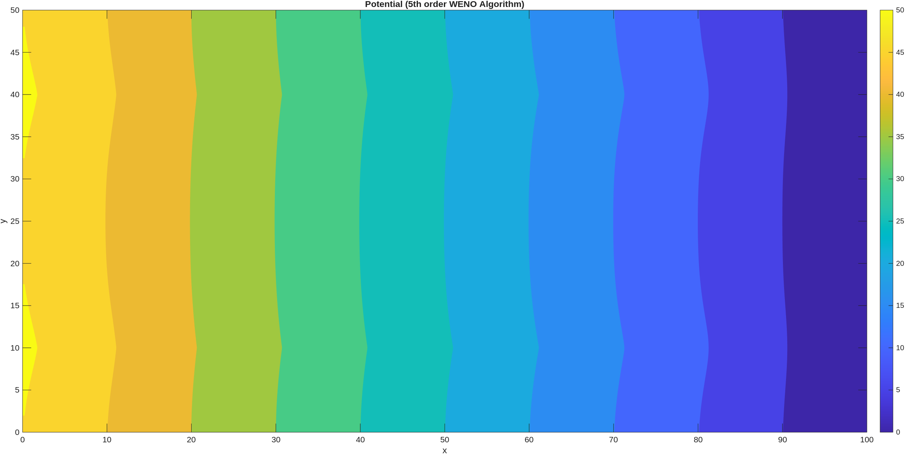
Two Dimensional Advection Equation
After successfully implementing the Eikonal equation, I proceeded to develop the code for the two-dimensional advection equation. This task proved to be more challenging than the Eikonal case, as it involved not only the WENO advection scheme but also the TVD Runge–Kutta time integration method. The WENO advection scheme is used to construct the semi-discretized form of the advection equation by discretizing the spatial derivatives.
This formulation requires the use of a staggered grid; however, to avoid unnecessary complexity, I did not explicitly define the staggered grid. Instead, it was handled internally within the relevant functions, rather than being defined and maintained globally. This design choice significantly simplified the implementation. In addition, I did not explicitly handle ghost points. The computational domain remains \(400 \times 200\), and the algorithm computes the solution only for indices \(4{:}N_x-2\), as required by the fifth-order upwinded scheme. As a result, the effective solution domain is \((N_x-5) \times (N_y-5)\); however, this compromise was acceptable given the substantial simplification it provided during implementation.
Provided below are the code and report for solving the two-dimensional advection equation using a fifth-order WENO scheme.
As shown in the results, two types of initial conditions and three types of test problems were considered. The first initial condition introduces a discontinuity in the density field (a square-shaped profile), while the second consists of a smooth Gaussian blob. The test cases include constant velocity in the x-direction (with no y-component), velocity components in both x and y directions, and a nonlinear velocity field. The nonlinear case, however, did not produce satisfactory results. The corresponding results are presented below.
| Problem | Initial Condition | Result |
|---|---|---|
| Problem 1 |
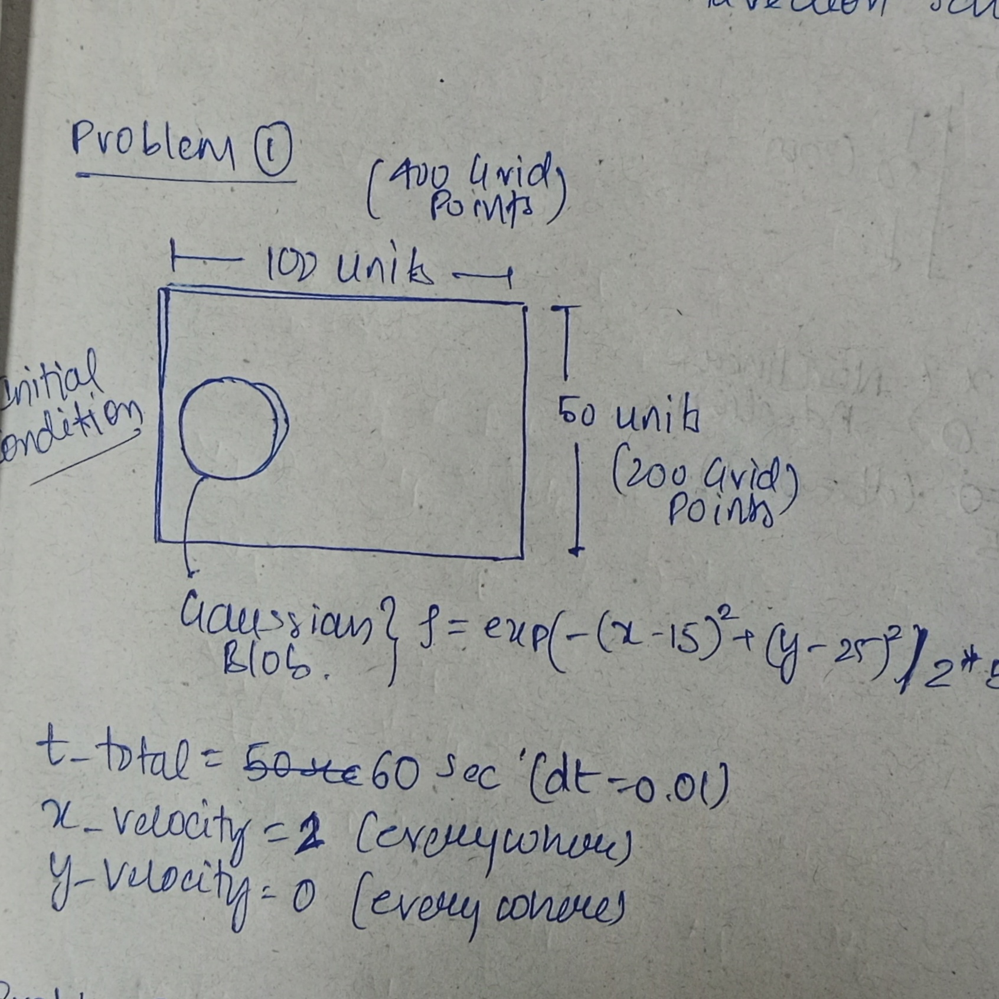 |
|
| Problem 2 |
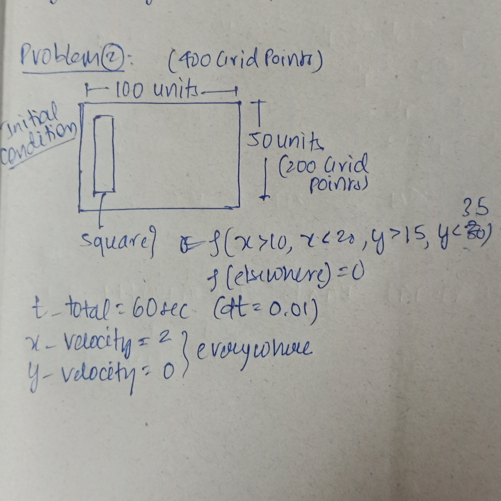 |
|
| Problem 3 |
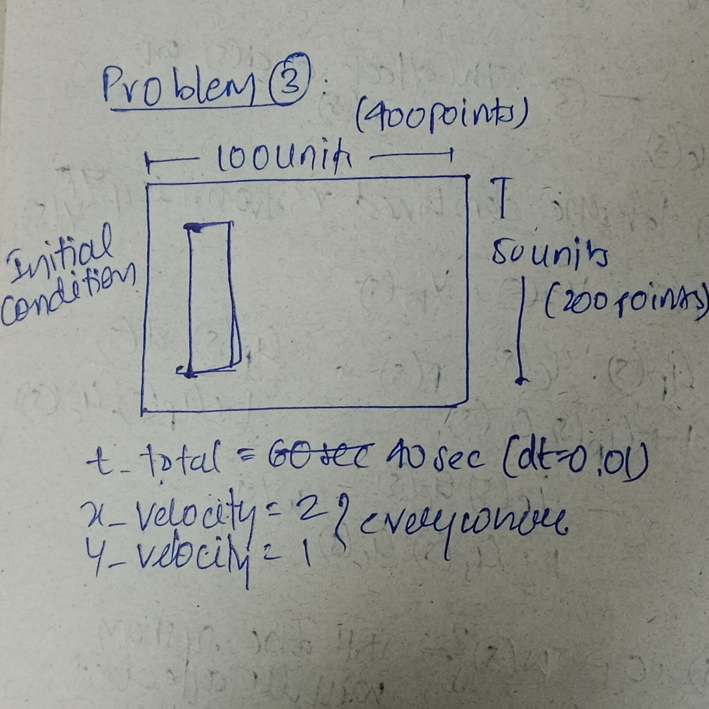 |
|
| Problem 4 |
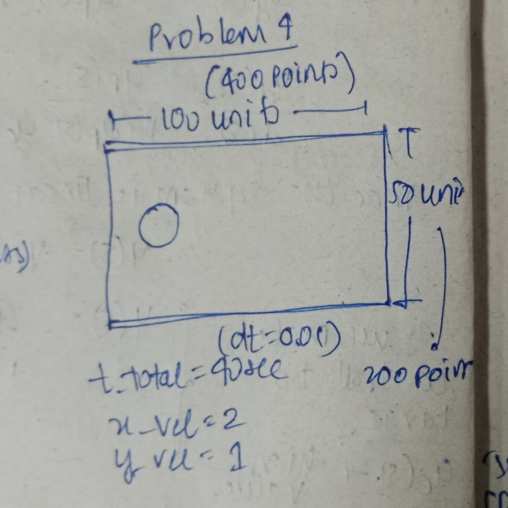 |
|
| Problem 5 |
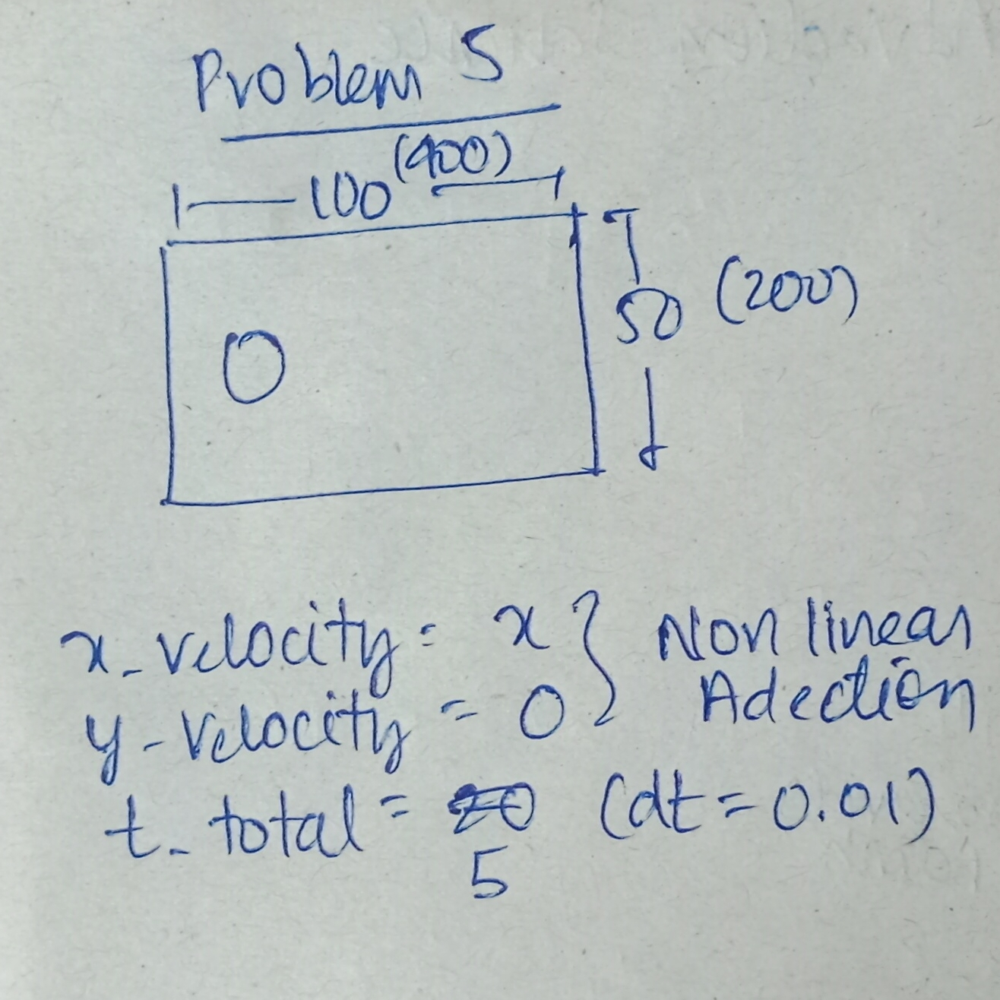 |
I observe that the code becomes unstable when the velocity field is nonlinear, which is an issue I had mentioned earlier. This is precisely where I am currently stuck, since Hughes’ flow model involves a velocity field that varies spatially, making the advection equation nonlinear. Nevertheless, I attempted to use the same code framework to implement the Hughes’ flow model.
Two Dimensional Hughe's Flow
Using the successfully implemented Eikonal equation solver together with the problematic advection equation solver, I developed a solver for the Hughes’ flow model. As expected, the combined solver did not produce satisfactory results. The corresponding code, report, and results are provided below.
Presented below are the results for a synthetic test problem solved using the developed solver. As expected, the solution exhibits instability.
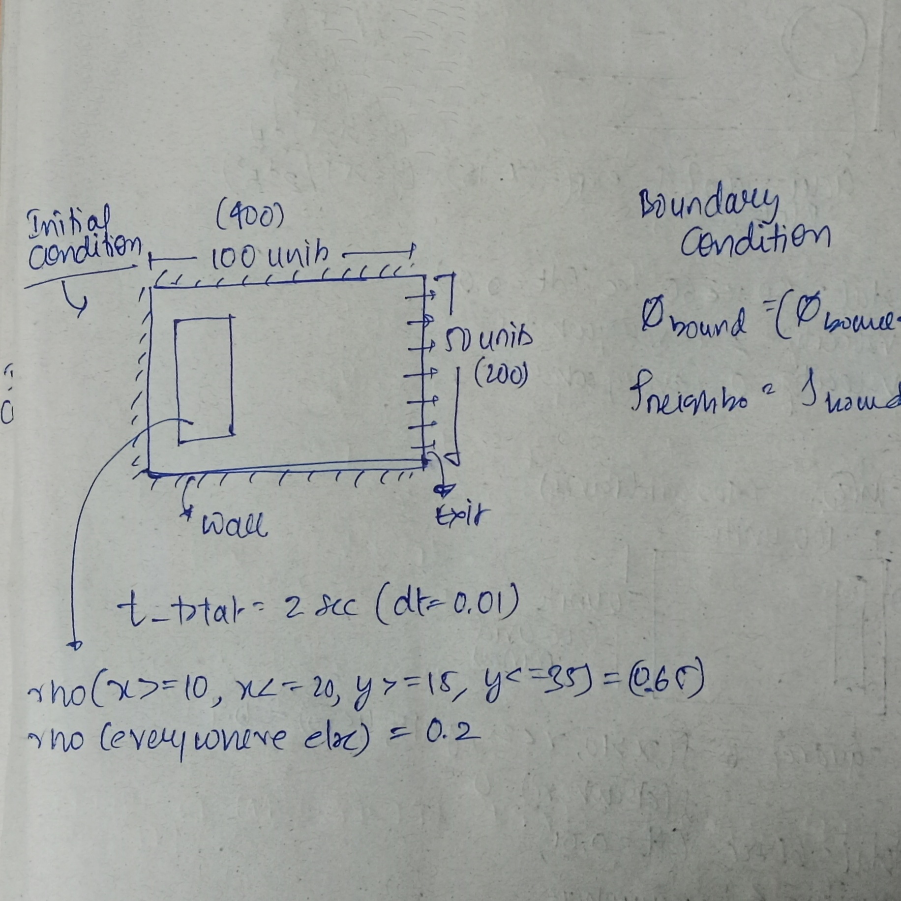
Meeting 11
Meeting 11
So after looking at the results of meeting 10, I was suggested to do the following.
- First is that I solved the advection equation with the velocity field that obeys the Greenshields' relation. Density vs X is plotted for Centerline constant Y values.
- Then I solved the problem of Hughes again with controlled delta_t (CFL) and with some modification in the boundary condition of the flux while solving the advection equation.
- Now, since the Hughes flow was facing a problem because of the new advection (higher order Advection), I have also tried solving the Hughes flow with my old advection solver, which used the first-order Lax–Wendroff equation, and also the newly formed Eikonal solver, which used a higher-order WENO fast sweep algorithm.
Old Eikonal and old Advection
So now I will be using the old eikonla and old advection solver to solve the same problem. And I am expecting to see no problmes making this code.
THis result of density could be used as soemthing to be looked forward to.
New Eikonal Equation solver and Old Advection Solver
Blunder
Here due to the advection equation being unstable for non linear advection equation, I have finally tried solving the problme with the old advection and new Eikonal Equation and here is the result
Density Distribution at Centerline
Density Distribution
Potential Distribution
Surprizingly what i noticed was that the results were still no good. And for this reason, I am re-attempting the problem with the old adection and old eikonal equation which I hav done in my last UGP. Here is the Report
Here is the corrected code. I have been making two blunders, and that is setting the inifnity value before the sweep to 10^2 which is very low. The paper recommeneded 10^12. And the second thing is I forgot the negative sign in the relation between the velocity and phi. Due to which i was getting some undesirable result shown in the above pop up.
But after correcting the above blunder, I have finally generated a satisfoactory result using the new Eikonal and Old Advection equation, The Result for density is shown below. THis simulation of 50 sec took me almost an hour to process, hence the I havent increased the domain time. However it is obviousl that the simulation is not complete (Since not all the crowd have made it to exit in 50 sec).
And the result shows that new Eikonal Equation which is of the higher order is working as expected.
Non-linear Advection Problem with GreenSheild Relation
The last time I tried using the higher order Advection scheme (Fifth order WENO), I got the following result, which was for constant velocity.
For Constant Velocity Condition :The report for this code is given here : Report
It can again be seen that the Advection equation solver breaks for non linear problmes (Greensheild's velocity).
Hughes's Flow with the above Advection Equation
Blunder
Using the above Advection equation I againn tried solving the hughe's Flow problem, nad given below are the reuslts
After correcting a blunder this is the result for the problem with Higher order Eikonal and higher order Advection.
A Thought on Initial Condition
So in the quest of making the advection work, I tried lowering the initila condition. The reason was that when the density reaches the 0.5, then the image shown below occurs.
And so this time , I have first tried this initial condition on the 5th Order WENO Advection Equation, with varying velocity (GreenSheild's Relation). The problem description and the result for density is given below.
What I have seen here is that the density has changed advected but the way it does that is not as expected. I am suspecting that the problme is with the CFL value.
THe result given below are for the similar problem but solved usign the Lax Wendroff Scheme.
After finding that the advection solver worked some what better for lower veocity, I tried the same on the overall Hughe's Solver, and the problem description and the results are given below :
Meeting 12
Meeting 12
It has been a long time since I took over crowd dynamics. And in my last meeting, due to the advection equation causing problems, I was suggested to solve the 1D equation for the advection equation. The reason I think I directly started the 2D problem rather than first solving 1D and then moving to 2D was because I realised that the Eikonal Equation Solver (Fast Sweep method), but in WENO, discussed (and introduced to me) in the paper was in 2D. And since this method considered us to compare some quantities in the X and Y direction, I found it difficult to implement a WENO Fast Sweep without a concrete scheme mentioned somewhere. And the reason I was able to solve the 1D Fast Sweep in my previous semester was because the one dimensional Fast Sweep was already derived and mentioned in the previous paper that introduced the concept of the Fast Sweep (but not WENO, rather a simpler lower order method).
Also one more learning is that the explicit method to solve non-linear equations doesn't have to involve iteration, but for the implicit method it has to be iterative.
But since now I am not required to solve the 1D Hughe's flow completely (which requires me to know about the 1D WENO algorithm for both advection and eikonal), I can just solve the 1D advection using the WENO, fix the problem if any, and then directly use the learning from this to 2D advection and then fix it. And since my 2D eikonal solver with WENO is already working, I can then move on to solve Hughe's flow in 2D completely using the WENO. So that's an overview of all the work that I will be doing for this meeting. Moving on...
One Dimensional WENO Algorithm.
Problem :
Given below is the code, and here is the report :
Problem Description :
Code
clc;
clear all;
%-------Domain Parameter-----%
% Grid Points
global Nx;
Nx = 400;
%--Important Parameters--%
INFINITE = 10^12;
global eta; eta = 10^-6;
error_eta = 10^-9;
CFL = 0.5;
% Dimension of Domain
Lx = 100;
% Domain
x = linspace(0,Lx,Nx);
% Defining velocity
global x_velocity;
% Space Interval
global h;
h = Lx/Nx;
% Total Time
t_total = 150;
Initial Condition (Density and Velocity)
% -- Initial Condition (Density) -- %
xc = 15; % center x
sigma = 5; % width
rho = 0.2*exp(-((x-xc).^2) / (2*sigma^2) ) + 0.1;
% -- Initial Condition (Velocity) -- %
%--Function to compute Velocity using Density
function speed = makeSpeed(rho)
global Nx;
speed = zeros(1,Nx);
for i = 1:1:Nx
speed(1,i) = 1 - rho(i);
end
end
x_velocity = makeSpeed(rho);
Flux Calculation
% -- Function that will calculate the flux depending on the u,v and Density -- %
function flux = makeFlux(rho)
global Nx x_velocity;
% Initialzing Flux
flux = zeros(Nx);
for i = 1:1:Nx
flux(i) = rho(i) * x_velocity(i);
end
% Assign the boundary flux to be equal to zero
flux(1) = 0;
end
Time Marching
%--Preallocating the memory
rho_n = zeros(Nx);
rho_1 = zeros(Nx);
rho_2 = zeros(Nx);
rho_next = zeros(Nx);
%-----------MAIN SOLVER------------%
t = 0;
step = 0; % For plotting at regular interval
while t< t_total
% Computing Cost For the density rho
x_velocity = makeSpeed(rho);
% Updating the delta_t with proper CFL condition (Wiki Pedia)
u_max = max(x_velocity(:));
dt = CFL / ( u_max/h + 1e-12 );
% -- Making rho_n and RHS of rho_n
rho_n = rho;
semi_discritze_form_rho_n = makeRHS(rho_n);
% ---------- Making the RHO_1 and then RHS of rho_1 ------ %
for i = 4:1:Nx-2
rho_1(i) = rho_n(i) + dt * semi_discritze_form_rho_n(i-3);
end
% -- Extrapolation (My Intuition)
rho_1(3) = rho_1(4); rho_1(2) = rho_1(3); rho_1(1) = rho_1(2); % Right Edge
rho_1(Nx-1) = rho_1(Nx-2); rho_1(Nx) = rho_1(Nx-1); % Left Edge
% -- RHS of discritised form using rho_1
semi_discritze_form_rho_1 = makeRHS(rho_1);
%--------- Making the RHO_2 and RHS of RHO_2 ----------%
for i = 4:1:Nx-2
rho_2(i) = 3/4 * rho_n(i) + 1/4 * (rho_1(i) + dt * semi_discritze_form_rho_1(i-3));
end
% -- Extrapolation (My Intuition)
rho_2(3) = rho_2(4); rho_2(2) = rho_2(3); rho_2(1) = rho_2(2); % Right Edge
rho_2(Nx-1) = rho_2(Nx-2); rho_2(Nx) = rho_2(Nx-1); % Left Edge
% -- RHS of discritised form using rho_2
semi_discritze_form_rho_2 = makeRHS(rho_2);
%----------Making the rho_next-------------------------%
for i = 4:1:Nx-2
rho_next(i) = 1/3 * rho_n(i) + 2/3 * (rho_2(i) + dt * semi_discritze_form_rho_2(i-3));
end
% -- Extrapolation (My Intuition)
rho_next(3) = rho_next(4); rho_next(2) = rho_next(3); rho_next(1) = rho_next(2); % Right Edge
rho_next(Nx-1) = rho_next(Nx-2); rho_next(Nx) = rho_next(Nx-1); % Left Edge
step = step + 1;
%--Plotting rho
if mod(step,1) == 0
figure(6);
plot(x, rho, '-'); % blue line with thickness
ylim([0 1]);
xlim([0 100]);
title(sprintf('Density at t = %.2f', t));
xlabel('x');
ylabel('\rho');
grid on;
axis square;
drawnow;
frame = getframe(gcf);
writeVideo(video, frame);
end
% Substituting back the rho value \
rho = rho_next;
% Updating the time
t = t + dt;
end
Semi Discrete form
function semi_discrete_form = makeRHS(rho)
global Nx x_velocity h;
semi_discrete_form = zeros(Nx-5);
%--Flux for the given rho distribution
flux = makeFlux(rho);
% Calculating the maximum speed
alpha_x = max(x_velocity(:));
% -- Calculating the value of f+ and f- at {i+2,i+1,i,i-1,i-2,i-3} -- %
fx_negative_whole = zeros(Nx);
fx_positive_whole = zeros(Nx);
for i = 1:1:Nx
fx_positive_whole(i) = 1/2 * (flux(i) + alpha_x*rho(i));
fx_negative_whole(i) = 1/2 * (flux(i) - alpha_x*rho(i));
end
% -- Computing the RHS of Semi Discrite form.
for i = 4:1:Nx-2
%--X--%
% fx{+}_[i+1/2,j]
fx_plus_x_half_forward = stencil( ...
fx_positive_whole(i-2), ...
fx_positive_whole(i-1), ...
fx_positive_whole(i), ...
fx_positive_whole(i+1), ...
fx_positive_whole(i+2));
% fx{+}_[i-1/2,j]
fx_plus_x_half_backward = stencil( ...
fx_positive_whole(i-3), ...
fx_positive_whole(i-2), ...
fx_positive_whole(i-1), ...
fx_positive_whole(i), ...
fx_positive_whole(i+1));
% fx{-}_[i+1/2,j]
fx_minus_x_half_forward = stencil( ...
fx_negative_whole(i+2), ...
fx_negative_whole(i+1), ...
fx_negative_whole(i), ...
fx_negative_whole(i-1), ...
fx_negative_whole(i-2));
% fx{-}_[i-1/2,j]
fx_minus_x_half_backward = stencil( ...
fx_negative_whole(i+1), ...
fx_negative_whole(i), ...
fx_negative_whole(i-1), ...
fx_negative_whole(i-2), ...
fx_negative_whole(i-3));
fx_positive_half = fx_plus_x_half_forward + fx_minus_x_half_forward;
fx_negative_half = fx_plus_x_half_backward + fx_minus_x_half_backward;
%--Boundary Condition -- %
% Left Wall (Flux set to Zero)
if(i == 4)
fx_negative_half = 0;
fx_positive_half = 0;
end
% Right Wall (Flux Set to Zero)
if(i == Nx-2)
fx_positive_half = fx_positive_half;
fx_negative_half = fx_negative_half;
end
% Computing RHS of Semi Discritized form
semi_discrete_form(i-3) = - 1/h * (fx_positive_half - fx_negative_half);
end
end
Stencil
% To compute f half. Order of input matters
function f = stencil(f1,f2,f3,f4,f5)
global eta
% Compute S values
s_1 = ((1/3) * f1) + ((-7/6) * f2) + ((11/6) * f3);
s_2 = ((-1/6) * f2) + ((5/6) * f3) + ((1/3) * f4);
s_3 = ((1/3) * f3) + ((5/6) * f4) + ((-1/6) * f5);
% Compute Beta
beta_1 = 13/12 * (f1 - 2*f2 + f3)^2 + 1/4 * (f1 - 4*f2 + 3*f3)^2;
beta_2 = 13/12 * (f2 - 2*f3 + f4)^2 + 1/4 * (f2 - f4)^2;
beta_3 = 13/12 * (f3 - 2*f4 + f5)^2 + 1/4 * (3*f3 - 4*f4 + f5)^2;
% Definign Gamma
gamma_1 = 1/10;
gamma_2 = 3/5;
gamma_3 = 3/10;
% Computing weights bar
w_1_dash = ( gamma_1 ) ./ ((eta + beta_1)^2);
w_2_dash = ( gamma_2 ) ./ ((eta + beta_2)^2);
w_3_dash = ( gamma_3 ) ./ ((eta + beta_3)^2);
% Computing Weights
w_1 = ( w_1_dash ) / (w_1_dash + w_2_dash + w_3_dash);
w_2 = ( w_2_dash ) / (w_1_dash + w_2_dash + w_3_dash);
w_3 = ( w_3_dash ) / (w_1_dash + w_2_dash + w_3_dash);
% Computing Flux
f = w_1 * s_1 + w_2 * s_2 + w_3 * s_3;
end
And here is the results:
I see that the solution is still very oscilatory. It could be possible that this is the solution. The solution that I got from my previous model for this problem is given below :
I have thought to give the paper of the WENO advection, a reading. And then I think I wil continue with the implementing the one dimensional Advection using WENO. And this will take some time. Given below are the list of websites and alsoa paer, that i am reading to understand the WENO algorithm.
Meeting 13
From my previous conversation, I had the following suggestion. Here is this attempt. I am going to do the following.
- First get the results for the one dimensional advection equation using the WENO
- Then get the velocity to be equal to some function of (X) rather than being a function of density
- And then make the gradient of the initial condition of the density smoother
1. Constant Velocity Distribution:
For the purpose of my toy problem, in all my attempts of solving this problem, I have taken the ghost points to be Nx = 0, Nx = 1, Nx = 2, Nx = 3 and Nx = 399, Nx = 400.
Parameters
- Constant velocity everywhere: u(x) = 10
- Center of the blob is at Lx = 20 units (Nx = 80)
- CFL = 0.5
- Total time: 10 units
- Boundary condition is fi-1/2 = 0 at i = 4. And the rest of all the values of f at the ghost points are never computed. However, the values of density are extrapolated.
Velocity expression and the result are given below.
2. Spatially Varying Velocity:
So now I have made the velocity to be just a function of space. And the expression for the velocity is given below.
The reason I have taken 0.1 is because I wanted to keep the maximum velocity not very high. Hence, the X coordinate has to be scaled down. Since the constant velocity is 10, it is because I have seen that the solution is somewhat more stable compared to when all the velocity comes from the linear part alone. So in a way, I am making the velocity the sum of a linear and a constant component.
Rest of all the parameters are kept the same.
Green Shield's Relation
Now I have finally made the Greenshield's relation, but there is one difference, and that is that this time, I have taken the velocity to be the sum of constant velocity and the Greenshield. (Just like in the above case, where the velocity is the sum of constant and linear velocity component). Parameter is kept the same.
One paper that I was interested in was the this. At soem poijt will also try understandign it, since it solves the same problem as that which I am tryign to solve, and maybe it migt have better explanation compared to my present paper.
Meeting 14
So one important suggestion that I got from my professor is as follows:
In my previous attempts, I almost missed this very subtle point that was also mentioned in the paper. And that was that this scheme of WENO was made to solve the problem on a grid size of 100×50 for the actual domain dimension of 100×50. Which means the space interval dx and dy is equal to 1. But I was rather solving it on a (400×200) mesh with the space interval being 0.25.
The actual abstract from the paper is given below, which shows that WENO is solved on a coarser mesh.
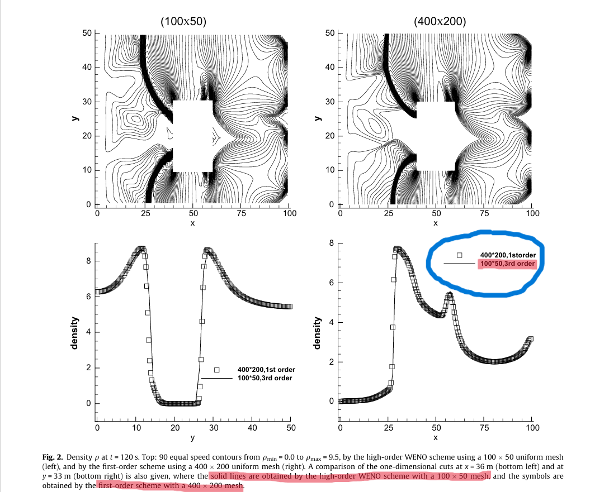
Because of me being careless, I never thought that the author might solve the scheme on a coarser mesh. What I expected was that a finer mesh is always a good thing to have. But this was unexpected.
In the discussion with my professor, he also showed me that this was mentioned in the original paper of WENO as well. And since I never expected this problem to arise in the first place, I missed seeing this detail in the original paper too. Given below is the part of the original WENO paper that explains this.
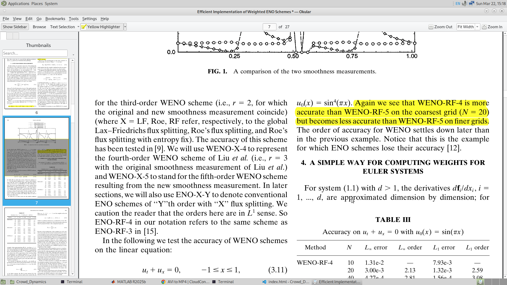
One Dimensional Advection WENO Solver :
This is the problem statement for my one diensional problem :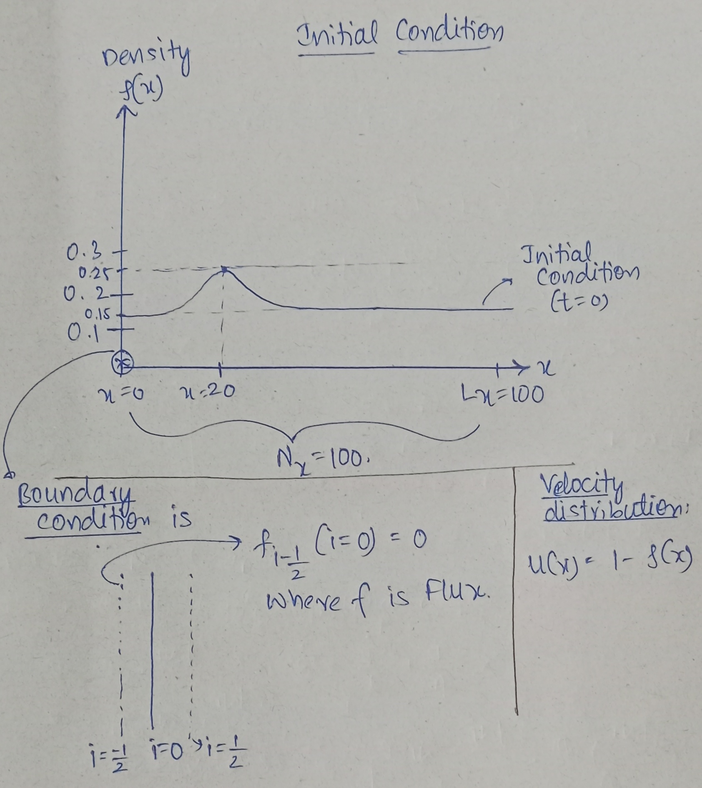
So finally, with that being said, this is the result I got for the problem I am solving.
The results are actually good. Because when seeing this, I can observe that the solution does contain shocks, but there are bumps in the solution (infront of the shocks). Now these bumps are also something I have seen in the original Railway Station paper, and this gives me some relief. It might be possible that all my problems boil down to having a finer grid. The solution to this would be to use a coarser mesh. Amazing...
Given below is the solution of the original paper, and my solution side by side.
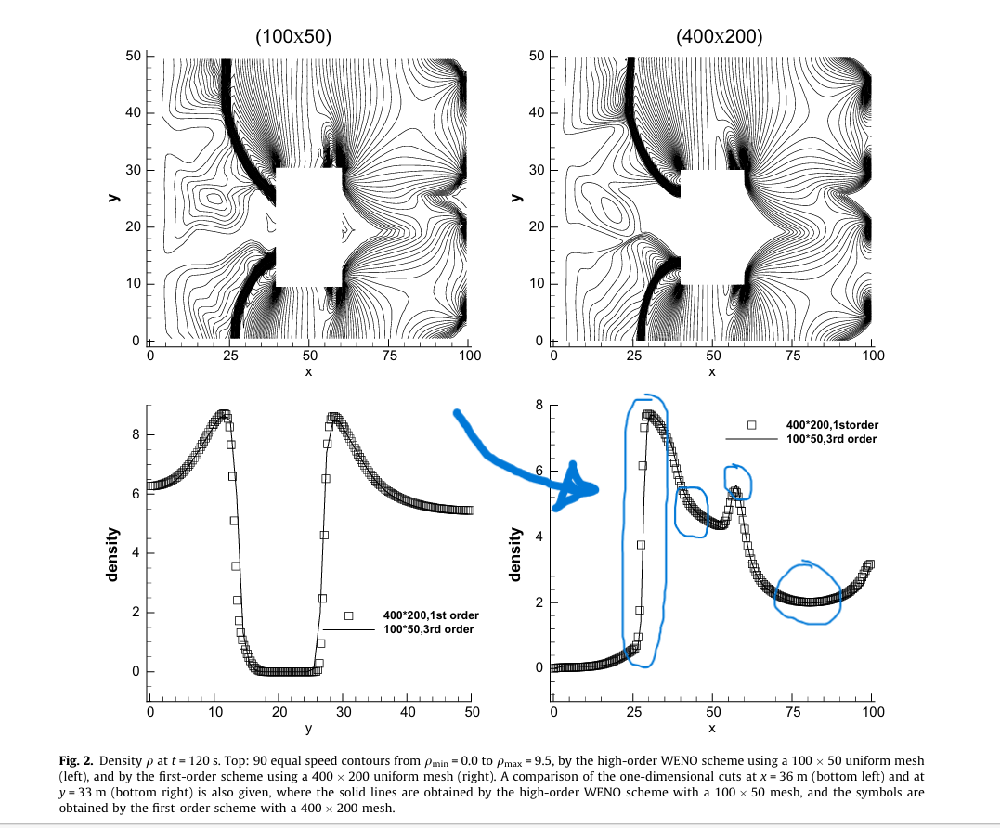

Here is the Report and the Code for the above one dimensional problem.
Two Dimensional Advection WENO Solver :
Now with the understanding on the one dimension, I am going ot solve the problem of advectino equation, but with two dimension. And the problem statement is given below.I have with me the problem where there is wall in all the three sides (Top, Bottom, and Left), and there is outflow of crowd at the right side of the domain. And there is a gaussian blob at some location in the domain. And this will be advected in the domain. The boundayr condition that I ahve imposed is as follows.
At the boundary the normal flux at the staggered grid just inside the non-staggered grid is equalk to zero. Which mean at right boundary (let say at x = 0), the x-flux at x = 0 - 1/2 is equal to zero. Similarly at the bottom boundary where the cordinates of the y = 0, the value of flux f at y = 0 - 1/2 is equal to zero. And similary at the top boundary where y = 200 I have set the y-flux at y = 200 + 1/2 to be equal to zero.. The pictorial representation of the same is given below :
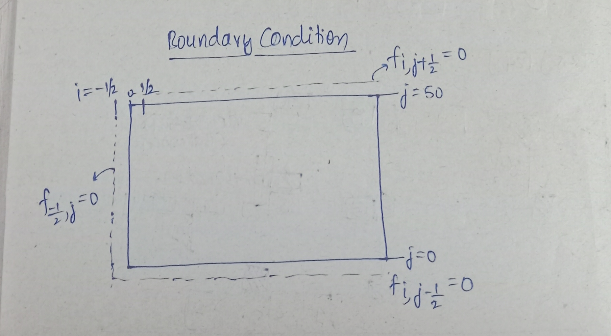
Anbd here is the initial condition :
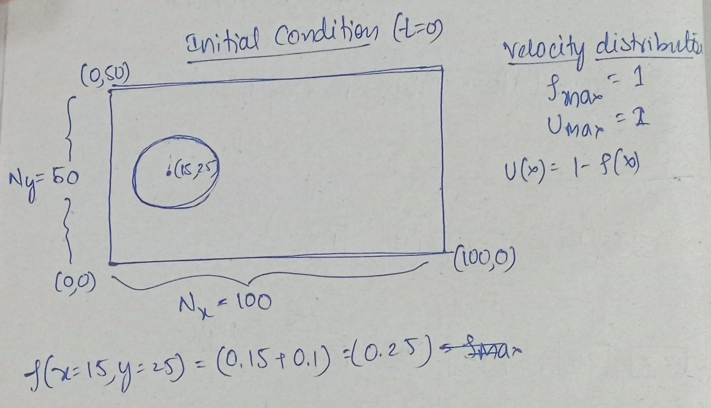
And the results are given below :
I do see some discrepancy, like the solution giving some nonsensical results at the x~46 units but apart from that the solution does look good. There are shocks forming at the edges signifying that the crowd behind with higher velocity is pushing the crowd at front wiht lower velocity. here is the Code and Report.
Two Dimensional Hughe's Flow :
Given below is the description of the problem, and I will be trying to solve using the Hughe's Flow and the advection and Eikonal Equation that i will be solving.
I have tried solving it and here is the result I got from that. I see that the solution again blew up.
Here is the Report and the Code of the above results for the hughe's flow.
Meeting 15
So this is the second Eureka moment that happened yesterday, and it was when my solver finally worked. There was one thing that I was missing: I had misinterpreted the phrase "Mirror Symmetry about X_{i+1/2,j}", and this caused the solver to break. In this process of trial and error over the last three days, trying to get things right, I faced many setbacks, and it turns out it all boiled down to my carelessness, which is annoying, I agree. So this and the next meeting will be divided into three parts:
- Summarizing my attempts to debug the program.
- A detailed documentation of the code, where I will try explaining each and every line of code and its reference in the paper, and also one minor problem I am facing in the solution at the boundary.
- And finally, the part where I will explain how I am planning to model the obstacle and the complete problem (exact replica of the paper).
Just to recall, I have also tried solving this same problem earlier using a First Order Scheme, and the results for the same can be seen here (Meeting 8). Now, I will be solving this problem using the same algorithm with which the author of this paper solved the problem, which is a higher-order scheme.
Crowd Flow with No Obstacle:
Here I have assumed the crowd flow enters from the left boundary and then leaves from the entire right boundary, with no obstacle present. The initial density (at t = 0) is zero everywhere inside the domain, and people start to enter the domain from the left side. I have imposed an unsteady boundary condition at the left side of the boundary, as given below. (The paper says to impose the boundary condition on the flux, and not the density. The densities are computed internally in the solver.) Also, the total computation time (time domain) mentioned in the paper is 300 sec.
f1 here is the flux in the X direction and f2 is the flux in the Y direction. The width of the domain is 50 m (y = 0 to 50), and this is the boundary condition at the inflow situated at the left boundary (x = 0 m).
The boundary condition at the top and bottom sides of the domain is that the normal flux is equal to zero at those locations, and the density and potential at the ghost points are simply extrapolated. The boundary condition at the right boundary is that the potential (phi) at the first grid point inside the domain is equal to zero (the physical boundary does not coincide with the grid boundary). The density and potential at the ghost points are simply extrapolated.
Just to ensure that the shocks are forming in the right way, I have also plotted the resutl in one dimension. And this gave a more clear picture of the shocks that are formed. The Results are shown below :
Crowd Flow with Obstacle:
Now I have modelled an obstacle, and the boundary conditions for it are as follows:- The grid points inside the boundary are assigned a density equal to zero, and they remain as they are, with no computation happening at these points. The potential at points inside the obstacle remains 10^12 and is used in the computation but is not computed.
- At the boundary, however, the normal flux at the walls of the obstacle is assigned to be equal to zero.
Here are the results :
Exact Problem:
Now I have made the outflow of the crowd restricted to only a part of the right boundary, and not the complete right boundary, as mentioned in the paper. All the other things are kept the same.
Crowd Flow through Narrow Lanes:
Out of curiosity, I have tried solving a problem of my own. My motivation behind this work in crowd dynamics comes from temples, where it is very natural that the path of the crowd does not have to be straight or "open." What I aim to do in this problem is to solve for the crowd flow through a path which is curved. However, since it is not easy to implement a curved obstacle using FDM, I have come up with a zig-zag path which takes 90-degree turns. A rough sketch of the domain is given below.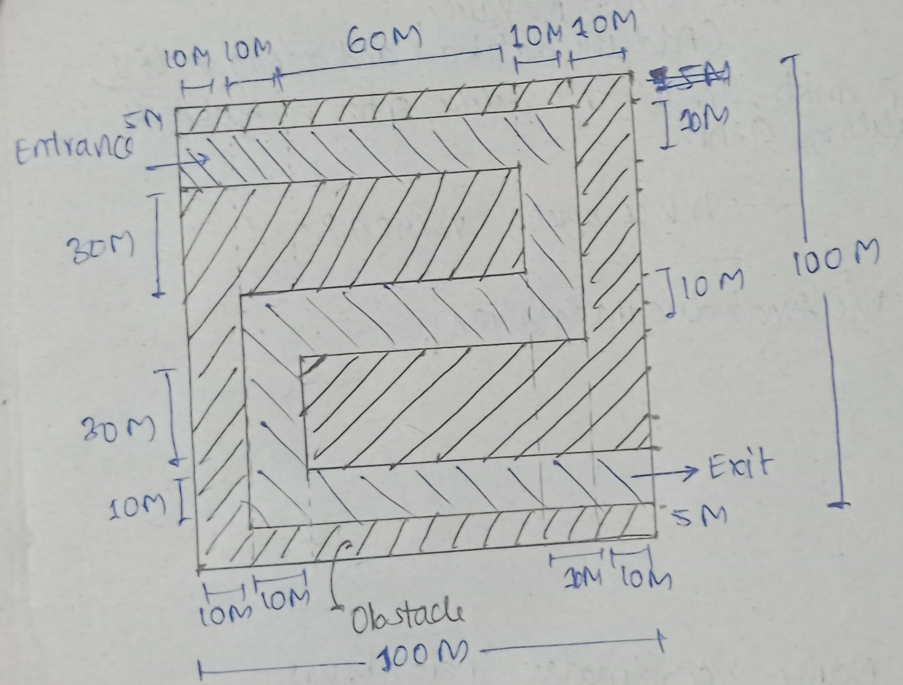
Now I have made some mistakes in assigning the domain in the problem. But through this I wanted to explore how the algoritrhm preforms not in external flows but also internal flows. And the resutls are given below :
Meeting 16
In the last meeting, I raised this concern about the solver: although it is almost done, there are some problems in it that make it different from the solver mentioned in the paper. The thing about the solution that made me feel that this is true is the time period. I observed that the crowd in my case takes maybe 170 sec to completely escape the domain, but in the paper it was seen that the crowd was still inside the domain (and has not completely escaped at least till 180 sec). What we suspect is that the boundary condition is incomplete.
When seeing this Report that is of the code I made for the solver, I see that I haven’t imposed the boundary condition that the normal flux on the boundary of the obstacle is zero. And this is, I think, what is missing, as rightly suggested. So, the results shown below are of the solution with the boundary condition on the obstacle implemented in the code.
So there are three things that should not be as they were. And they are as follows :
- The first one is simply missing the boundary condition on the boundary of the obstacle. And this is applied such that normal flux at the boundary (which, by the way, lies on the staggered grid) has to be zero. Similar to the no penetration condition on the boundary of the obstacle.
- Another error in the program that got my attention is the indexing of the obstacle. And that was also fixed. Here the problem was that the X coordinate of the obstacle was at the wrong location and that's because of the wrong indexing of the obstacle. So that too was fixed.
- And finally, the Lx and Ly that are used to plot were also considering the six ghost points that are involved in every dimension. Which means that the physical length starts from grid point, however the first computational point starts from 4 and, as said, the points 1, 2, 3 are the ghost points. Which was wrong. So now the plots are adjusted such that the physical dimension of the domain starts from x = 0 at N = 4 and x = Lx at N = Nx-6. And similarly, the value of dx is also changed from Lx/Nx, which was earlier, to Lx/(Nx-6) since Lx spans from 4 to Nx-3, which is of the length Nx-6.
Density Contour :
And then the second thing that the professor suggested was to ensure that the results are consistent with those in the paper. I thought that the only way one can ensure that the solutions are consistent with the paper is to validate them visually, since the paper never shares its code or data of its solution. But it looks like there are websites which, using image processing, could generate the data from the plot. And here are the websites that I have found to do the same (plot2data.com, plotextract.com). Now, given below is the comparison of the data obtained from my reproduced solver and the solver by the researchers.
Comparision :
Data of the Paper extracted using the website plotextract.com. The results are shown in the following order (Result from the paper, Extracted Result,My Result) And my results along wiht that of the paper is given below :
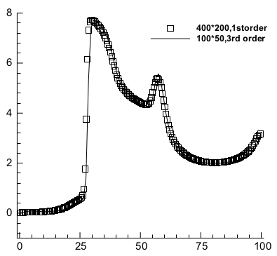

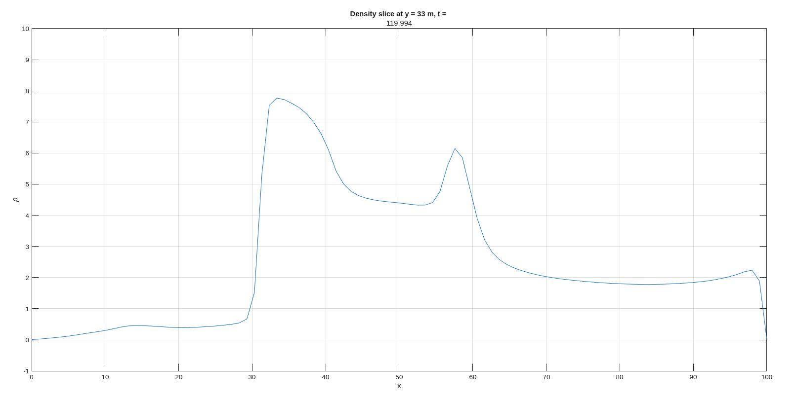
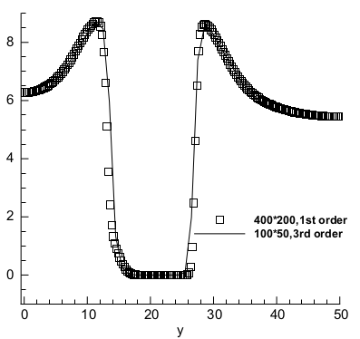

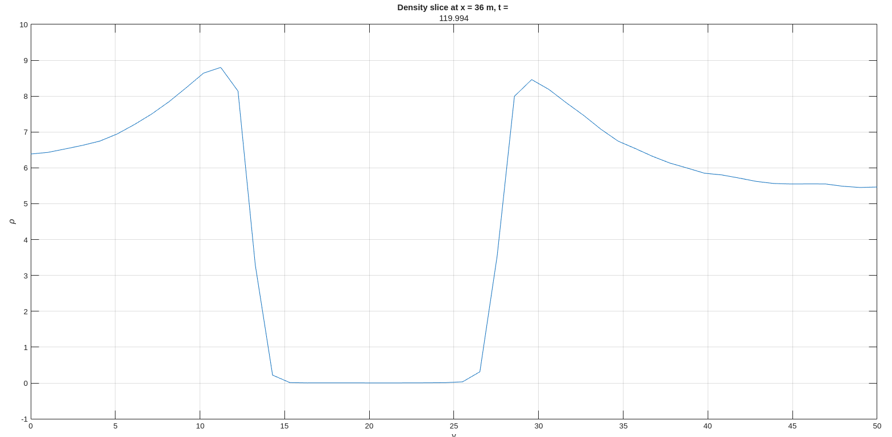
Now, the third thing that we talked about was the kind of problem that we will be solving for the paper. He explained that our novelty, or the element of contribution in the work, is not in the numerics, since till now whatever I have done is just replicating the work of others. And thus, he said that our contribution will be in the kind of problems that we might solve, and this is where our creativity lies. So now, given below is the summary of the problems that could be chosen to be solved, and I have also listed the papers from where I have taken this inspiration.
Here are paper that are suggested by the professor and also what I have explored, and read.
- A Continuum model for pedestrian flow with explicit consideration of crowd force and panic effects
- Continuum modelling of pedestrian flows — Part 2: Sensitivity analysis featuring crowd movement phenomena
Finally, as far as the UGP is concerned, the professor suggested that I work on comparing the first-order model and this WENO scheme, and this might be good work to show. So what I have thought is to divide the first part of the presentation into explaining the theory of Hughes' Flow, then the next part could be about the algorithm in brief, and finally the comparison of the results of the same problem using both schemes. Then I might interpret the results, and this could be a good final presentation.
Heterogeneous Crowds
After going through the paper, I became interested in implementing two more features into the solver: Panic Effect and Heterogeneity in the crowd. While reading Hughes' Original Paper, I noticed that it also discusses heterogeneity in the crowd. Being able to simulate different types of crowds will surely give the solver much more functionality.Multi-type Crowds (Click)
So this is my attempt to solve the extended Hughes' model for a multi-type crowd problem using the same numerical algorithm. Reading through the paper, I see that there is just one more hypothesis than the previous ones. Just to recall, the first hypothesis was about the relation between speed and density (Greenshields' Relation), the second hypothesis is about the definition of potential (Eikonal Equation), the third hypothesis is about how pedestrians try to minimize this potential (giving the velocity unit vector), and finally the conservation of pedestrians.
What the paper explains is that this is still valid for a multi-type crowd, but separately for each individual type. So each type will have its own density and its own potential (which will depend on its own exits), but the only thing that connects them all is their local density. Hughes says that the second, third, and fourth hypotheses will remain the same for each individual type of crowd. However, in the first hypothesis, the speed at each point in the domain will depend on the density, and this density will be the sum of the densities of each type of crowd at that location. Once obtained, the speed can, as usual, be given as \(f(\rho) = (1 - \rho)\), but the \(\rho\) here is the sum of the densities of all the crowd types at that location, i.e., \(\rho = \sum(\rho_a + \rho_b + \rho_c)\), if there are three kinds of crowd: \(a\), \(b\), and \(c\).
And here is the governing equation for solving the multi-agent crowd problem:
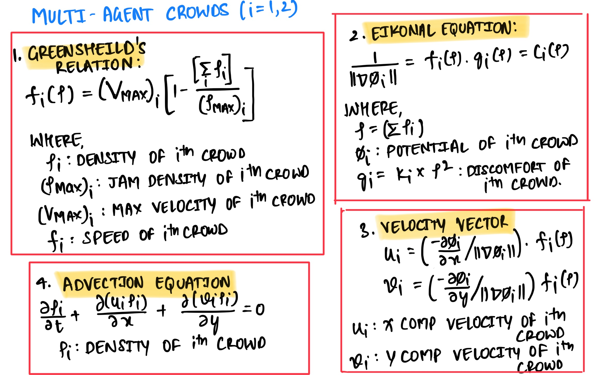
What makes the crowds different from each other are the values of \((V_m)_A\), \((V_m)_B\), and \(((\rho)_m)_A\), \(((\rho)_m)_B\), which will be used in the Greenshields' relation, and also the values of \(K_a\) and \(K_b\) used in the discomfort function. It is also possible to apply different exits to different crowds, as well as different boundary (and initial) conditions for each type of crowd, which includes inflow conditions. The only argument that connects all the crowds (or the only thing that allows one crowd to affect another) is that the local density at any point is the sum of the densities of all kinds of crowd at that point.
So given below is the problem description of multi-type crowd that I wish to solve.
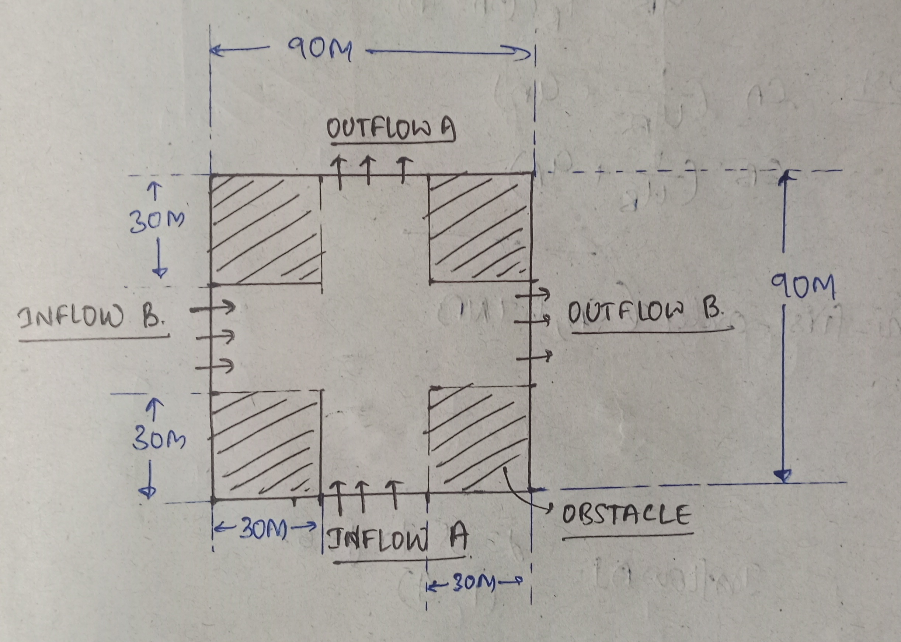
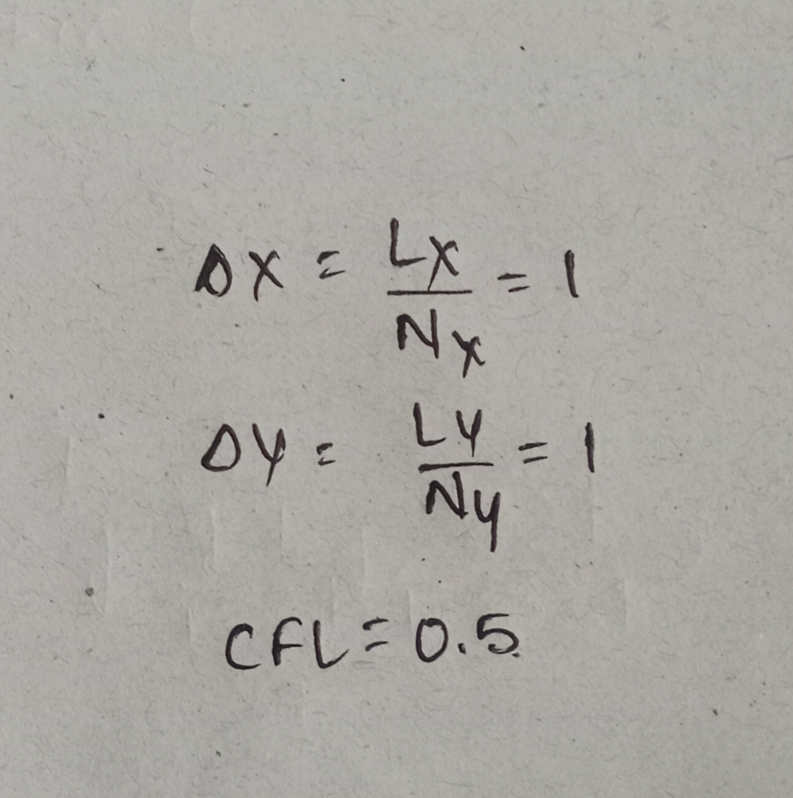
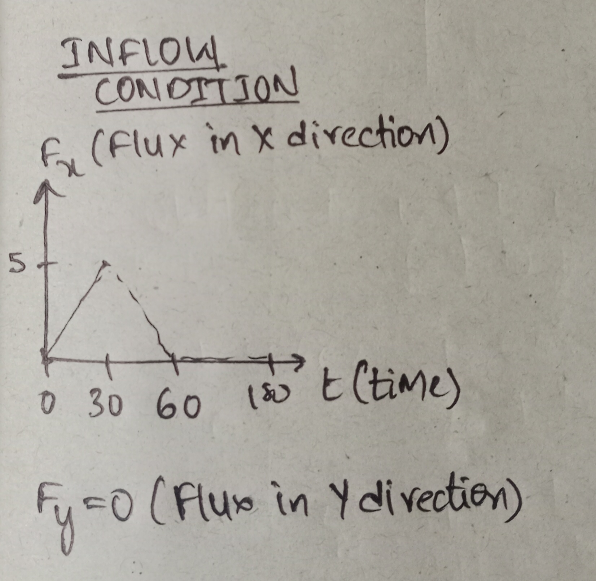
Checking the Indexing (Different problem, may be ignored)
But before solving the above problem directly, I have solved a simple single type crowd for a similar problem just to check indexing of the problem. The description of the problem and it's Result is given below :
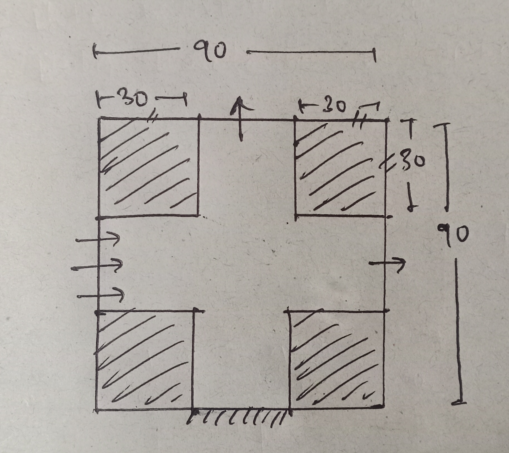
And here are the results :
I have taken here two kinds of crowd (Type A and Type B), and the they must now go through each other at the center in order to reach the exit. Given here is the Report
And finally here is the solution to this problem.
Advancing
Meeting 17
There are specifically two tasks that I have completed this week. The first was to replicate the results and verify that they are in line with those presented in the paper. The second was to explore and formulate a potential problem statement. I will first discuss the result validation and then move on to the problem exploration.
Solver validation
Just to recall this is the final result we have obtained.
So the plot given below is of my results and the paper results, and it can be seen that they are in line with each other. I am using an adaptive time step, and therefore the results shown “of the paper” are at t = 120 sec, while my results are at t = 120.49 sec. Also, the data obtained from my solver has 100 data points in x and 50 in y, because that was the prescribed grid size in each dimension for the problem. However the data points from the paper are obtained using the website PlotExtract.com.
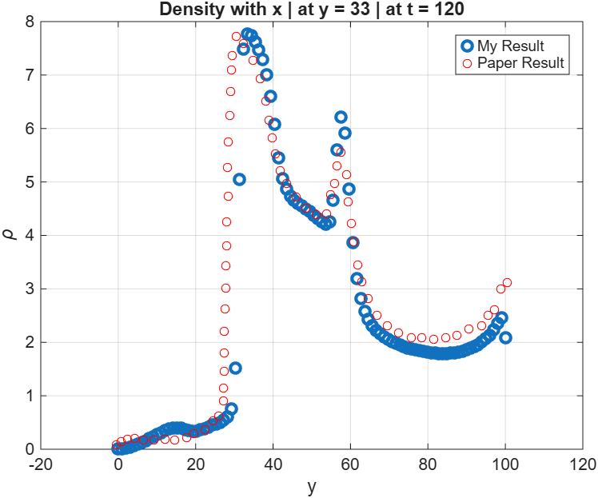
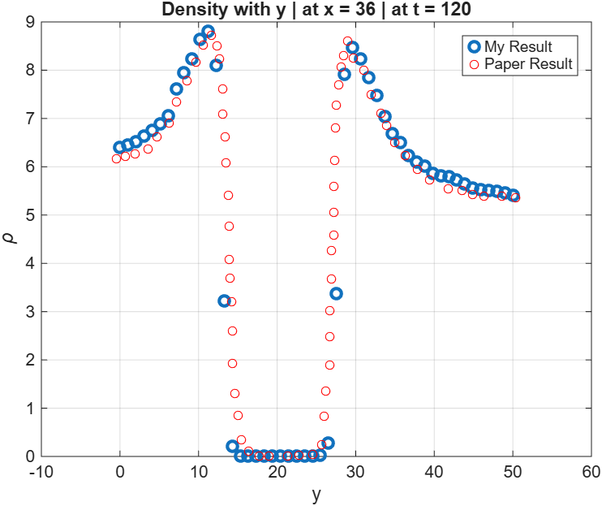
Given here are the links to download the CSV data : My File 1 (Download), My File 2 (Download), File 1 (Download), File 2 (Download)
Problem Exploration :
There are many possible ways to move forward. In the last discussion that I had with the professor, I explained that I have categorized the problems into three types: external-flow-like problems, internal-flow-like problems, and finally evacuation problems. All of them share a common objective of optimization. Some aim to optimize the evacuation time, while others focus on reducing dangerous density spikes.
The problem that particularly interested me is related to Indian Railways, specifically the Mumbai local trains. The issue that caught my attention is the bottleneck formed at the train doors. When a train arrives at a station, the same doors are used both by passengers exiting the train and by those attempting to enter it. This creates a severe crowding problem and can lead to dangerous density spikes. One possible solution could be to separate the incoming and outgoing flows. Another approach could involve modifying the door geometry or rearranging the door configuration to study whether such changes improve the crowd movement. I have elaborated further on these idea below.
The first task is to model the problem, and for that I have implemented the following setup. I have considered two different types of crowd: Crowd 2 (the passengers who want to exit the train) and Crowd 1 (the passengers who want to enter the train). Both of these crowds are required to enter or exit through the same set of gates.
In addition, the simulation will also include obstacles that mimic the train walls and doors. One important assumption in this study is that the crowd entering the train will not exit through the boundaries. Instead, they will move further inside and gather at the left of the obstacle. Accordingly, the crowd that is already inside the train is assumed to have the right boundary as its outflow boundary, as illustrated in the image.
This problem could be discussed before making an attempt to solve it.
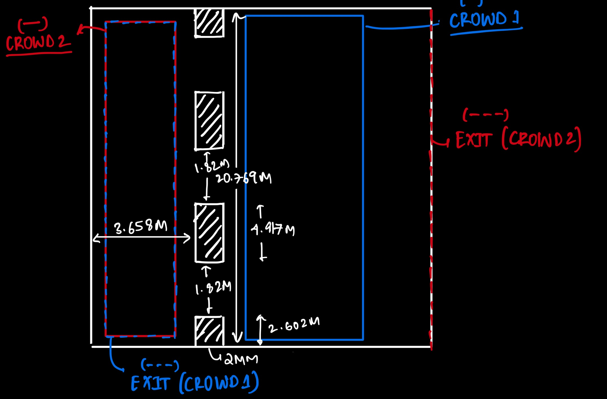
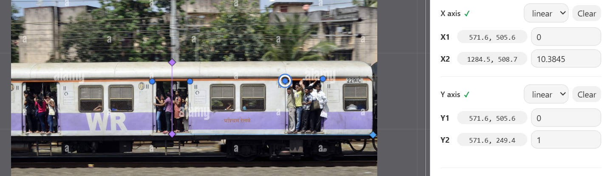
So the initial density condition is given below. Just for a small explanation, there are two kinds of crowds. One at the right, outside the train (which is also slightly bigger), and the other one at the left that is inside the train (which is also somewhat smaller). And the black-colored regions between the crowds are the obstacles. These obstacles are the walls of the train. There are three openings, and they are the doors of the train. This is the initial density distribution that is seen. I say there are two crowds because there are two exits assigned to each kind of crowd. And both the exits are only and only for a certain kind of crowd.
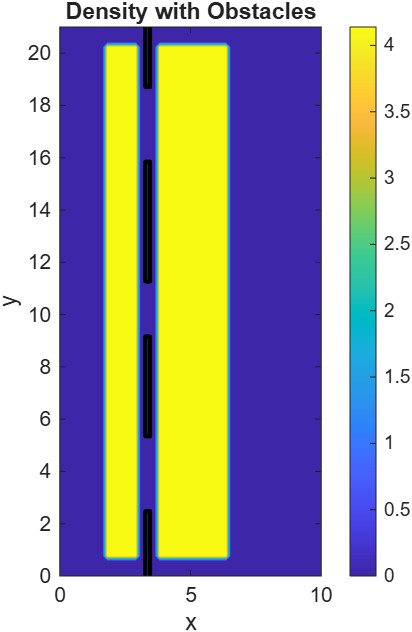
The crowd which is outside the train (at the right side of the obstacle) has the exit at the left, inside the train. And the crowd which is inside the train (at the left side of the obstacle) has their exits at the right boundary, which is considered to be the exits of the station. It is important to note that the exits for the crowd that is outside the train is a region rather than a boundary. And the exit for the crowd inside the train is the entire right boundary, which acts as an outflow for that crowd. Given below is the schematic of the exits for each kind of crowd.
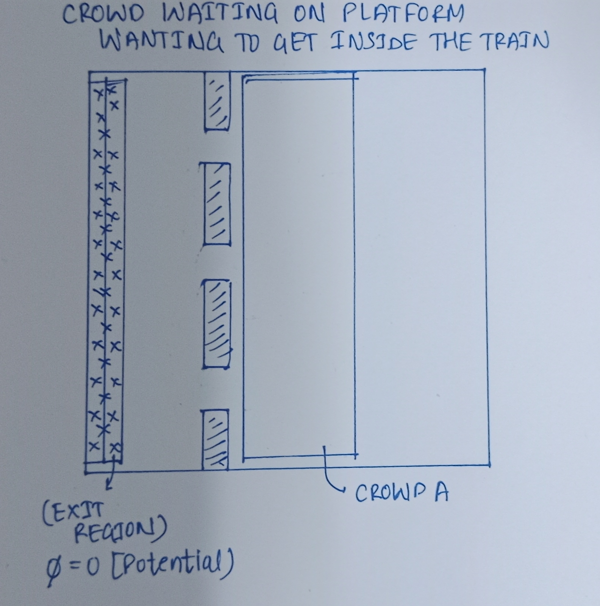
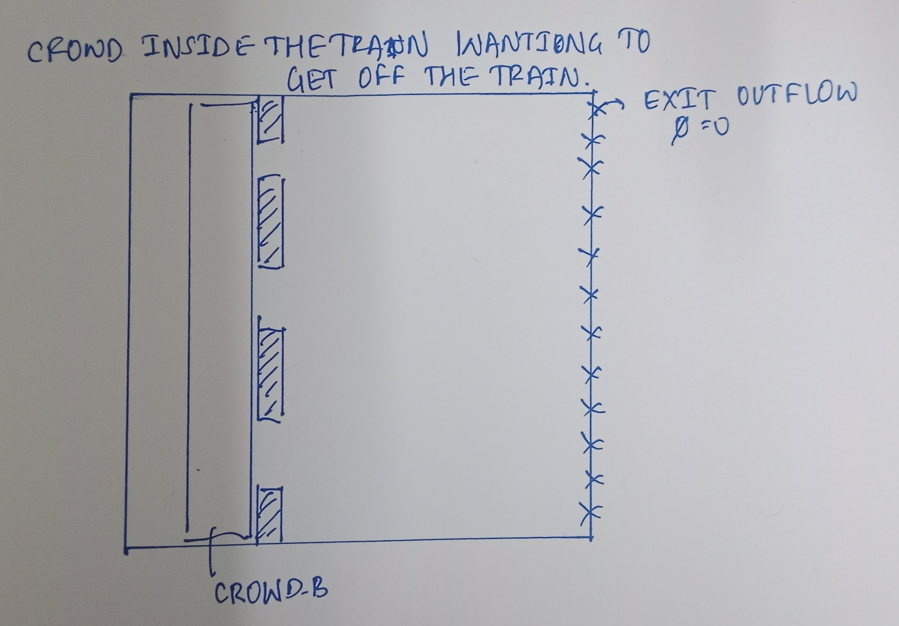
Before running the final simulation with both the crowds, I have solved the problem for the individual crowds and have shown the results below.
Only Crowd Moving Out of or Into the Train
Both the Crowds Plunging Together (Initial Condition and Result)
Meeting 18
So with the results that were obtained previously, we had decided to do the following. Firstly, what I see is that the density initially of both the crowds is 4.18, and what happens is that when both the crowds collide, then since initially they already had high density, both the crowds colliding will quickly make the density rise to 10. And this is the jam density considered.
And so the first suggestion by the professor was to start with lower density of the crowd. Because if the density is initially small, this will delay the time which it takes for the density to reach the jam density. And I assume that this time will be enough for the crowd to exchange, and thus the peak density will never be reached. The problem with the density reaching maximum is that it will make the speed of the crowd zero.
The second suggestion was as follows. In our previous meeting, the professor always asked me a question: "How many crowds are in the problem?" I realised now that I am plotting both the crowds by adding the density. And to anyone seeing the result, this could be confusing, as all of them look the same kind. He suggested that I visually make the crowds different from each other. Because the crowds look similar right now. So the second thing that I have taken into consideration is to make the crowds visually different from each other.
Here is how I am solving the problem. I have first considered the crowd that has density equal to 1 everywhere, and then I kept on increasing the density till the point when I see some kind of choking. And here, this phenomenon of choking is what I am defining to be the point where the crowd completely blocks the doors of the train. And when they block the doors and reach the maximum value of the density, the velocity of the crowd will turn to zero, and this will completely make the crowd choked. And this could be considered to be the point where the crowd becomes absolutely unbearable.
I have seen in my previous meeting that the crowd becomes unbearable when it starts with the density value of 4.18. So I will be increasing the crowd density from 1 to 2 to 3 to 4. And for the problem of visualising two different crowds, I have plotted crowd A and crowd B separately and have also added the plot where they are plotted together. I think that will solve the problem.
Here are the results :
Just to recall the crowd A is the one which wants to enter the train, and crowd B is the one which wants to exit the train.
Initial Density equal to 1
Initial Density equal to 2
Initial Density equal to 3
Initial Density equal to 4
Initial Density equal to 4.18 (Chocking Observed)
Here is the report of the above results.
Given below is the plot for the density evolution but with different colors. I have plotted for initial density of 4 and 4.18.
Meeting 19
So there are two tasks as suggested to me after this meeting. And they are: To work on the same chocking problem for the corrected and symmetric geometry so as to find the reason behind the crowd moving towards the bottom door of the train. And then solve a new problem to study the effect of obstalces in the form of vendors on the railway platform. They both are documentated in the two section shown below:
Vendor Problem - Click
New Problem (Studing the Obstacle on the platform)
So this new problem that could be thought of, as described by the professor, could be as follows.
- There is a rectangular platform and this is not Platform Number 1. So this means that the trains can take a halt on both sides of the platform. And for the problem that I am solving the train is stationed at left side. But the number of coaches stationed at the left side will vary.
- And then there is one pillar on the middle of the platform and also a staircase for the inter-platform bridge at the top boundayr of the domain. There is a vendor as well near the pillar which will be added and removed to study it's effect on the crowd dynamics.
Another question is what it is that I will study in this problem. So for that I have three ideas. And they are as follows.
Firstly, there are three cases.
- First thing that could be studied is the Evacuation Time. So this time could be calculated for two cases: when there are no vendors, when there is one vendor near the pillar.
- And then the other thing that could be studied is as follows. At the exit, at each time step, the average flow rate can be calculated and this flow rate value could be plotted with time. And then vendors could be introduced and the same plot of flow rate vs. time could be plotted. And both the results culd be compared.
- And similarly there could be a case where I could select Region A and Region B beside the pillars and could plot the flux value at both regions with time for each case (no vendor, one vendor).This is to study how does the flow rate of people changes with the introduction of the vendor.
One Coach on the platform (Click)
The train has arrived at just one side of the platform (left side). And only one coach is present on the station.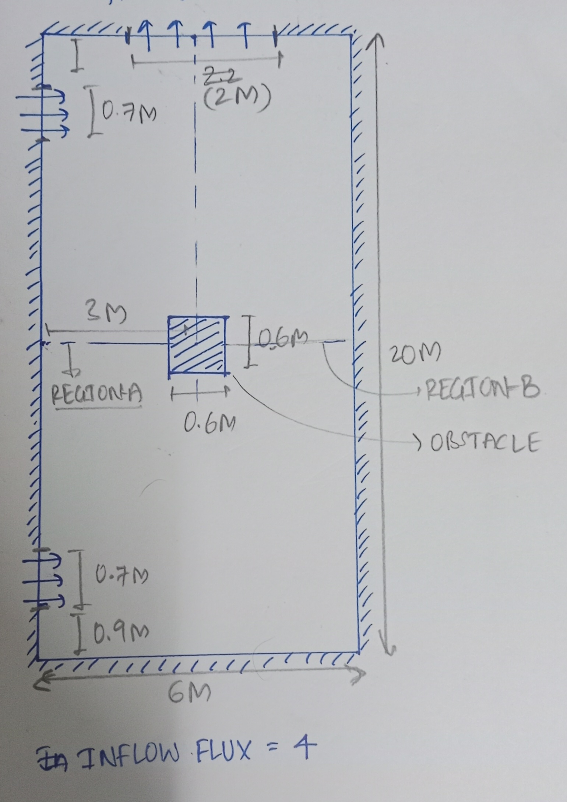
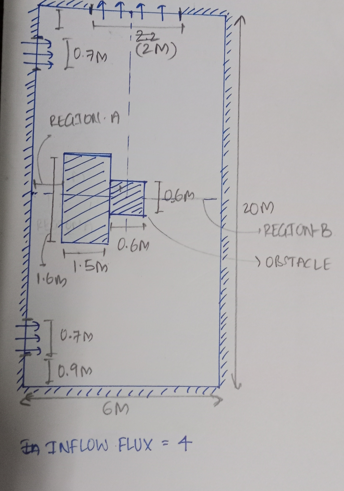
The results of the density evolution with time for each case are given below:
| Results | Flow Rate vs Time |
|---|---|
|
|
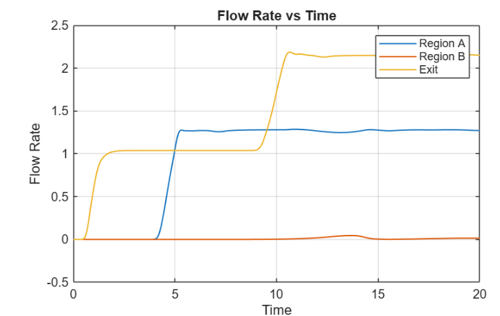 |
|
|
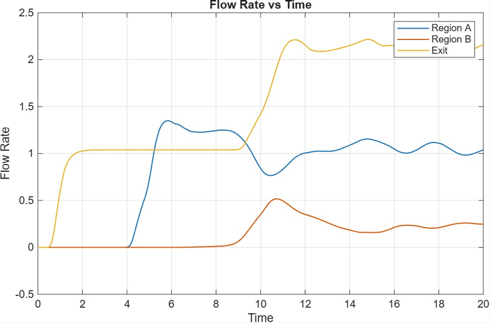 |
Two Coaches on the platform (Click)
So this problem is the same as the problem description that was given above. So the reason why this problem is solved (which includes an increased number of inflow) is because this will lead to some kind of choking at the exit. Also, I have noticed that the way I understood to apply the boundary condition of inflow from the right boundary is not correct. I will have to think about how can I make this happen. So, for now, I have solved for the problem where there are two coaches on the same side of the platform.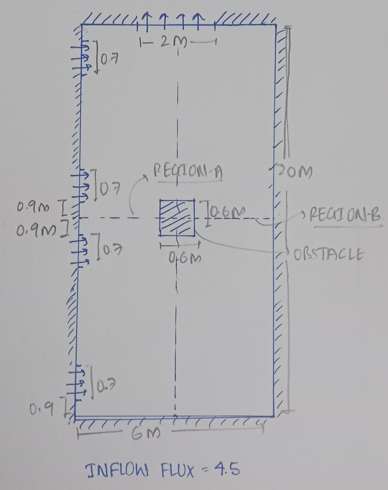
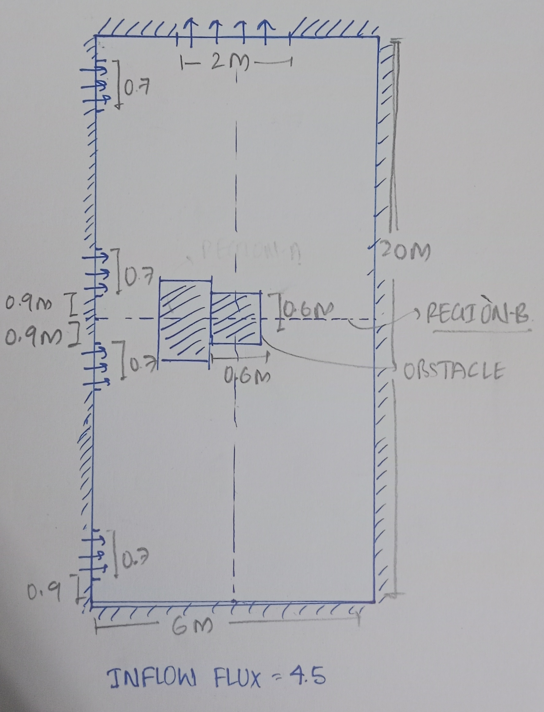
| Results | Flow Rates |
|---|---|
|
|
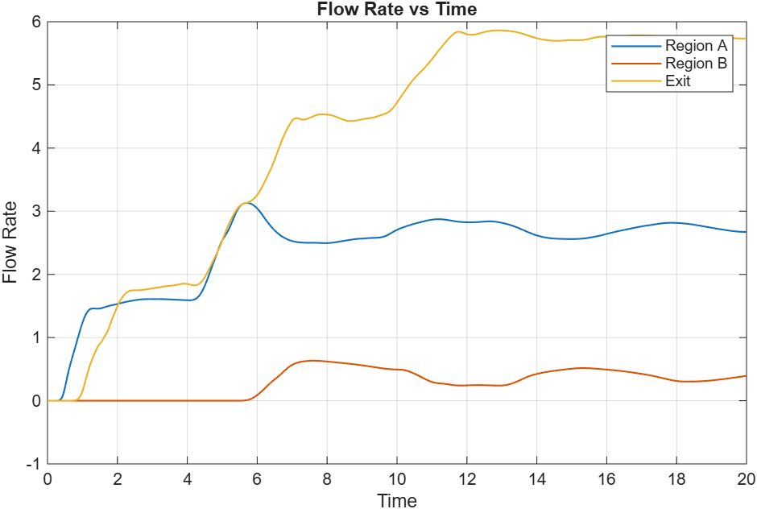 |
|
|
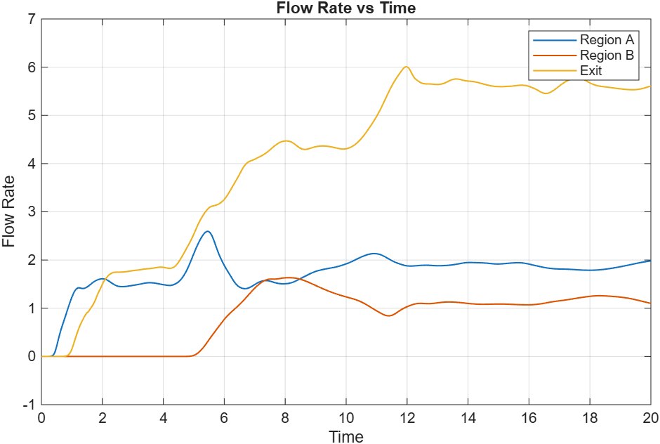 |
Chocking Problem (Symmetric) - Click
Symmetric Problem to understand the unusual behavior of the crowd
So in order to solve the problem of the chocking problem, I have first fixed the geometry of the problem. By fixing I mean to add the symmetry in the domain. Just to recall, i thought that crowd unusually moving to the bottom part of the domain in the last meeting's result was because of the unsymmetric domain. The argument that I gave was that the doors at the top and the middle part of the domian was smaller than the bottom door. And therefore the crowd easily makes those two doors blocked and this leads to the crowd moving to the bottom doors. The rough sketch of the domain is given below.

So I have first tried solving the problem with just two crowd just like the above meeting but with the difference being that the domain is symmetric. And then I have introduced the third crowd and solved as suggested.
This is the codes that could be used to make changes : ReportTwo Crowd Chocking Problem
So just to recall the problem involved two crowd. One which wants to go inside the train and the one which wants to go outside the train. In the problem solved below, I have take both the crowd to be of equal density. SO for example, densiyt equal to 2 means both the density of the crowd being equal to 2, initially.
| Resutls | Remarks |
|---|---|
|
|
What I see here is that the crowd moves through the paths and fight their way through the openings. But for desnity 2 there is no chocking observed. The crowd is exchanged. |
|
|
What I see here is that the crowd moves through the oath but at the time t ~ 2.20 sec. I see that there are region where the density exceeds 10 at soem points in the domain. And this because I have placed these checkpoint, the program is terminated. And therefore I then tried with the density equal to 2.25. |
|
|
So it was seen that the density reaches more than 10 at some part of the domian for this caes where the density is initially 2.25 at t ~ 3 sec. |
I see this situation of problem as follows. If I place the crowd at one part of the domain and completely block the exit with a wall, then there is absolutely no way for the crowd to reach the exit. Something similar also happens here. The crowd that is opposing increase the density at the doors. This region of high density increase to Jam Density. And this region of jam desnity enlarges and blocks the doors, building kind of a wall between both the crowd and their exit. And this forces the solver to make the density equal to more than jam density at the region where the desnity was keep on increasing (which is near the doors).
Three Crowd Chocking Problem
Now I have tried solving the problem with some crowd already present in the train and only ten percent of the crowd in the train is going out of the train.
I have divided the crowd into three kind. The first one being Crowd A - Wants to enter the Train, Crowd B - Wants to exit the Train, Crowd C - Stays inside the Train. After some calculation I have taken the following crowd in the problem, the rough sketch for the same is given below :

Area of Crowd B is equal to (1.2 * 21) m^2
Area of Crowd C is equal to (1.2 * 21) m^2
And it is assumed that the total density inside the trian is equal to 8 which is close to jam density (which is equal to 10)
- Density of crowd A is changed from 1 to 0.5 to 0.25
- Density of Crowd B is equal to 0.8 which is obtained by assuming that 10% of crowd will be moving out of the train.
- Density of Crowd C is equal to 7.2 which is obtained by assuming that 90% of crowd is still there in the train.
Paper Preparation
This section is about preparing the paper to be published. The journal that was aimed to be targeted is Physics of Fluids (PoF). And the section of the paper are suggeted to be- Abstract
- Introduction
- Governing Equation
- Formulation
- Results
- Conclusion
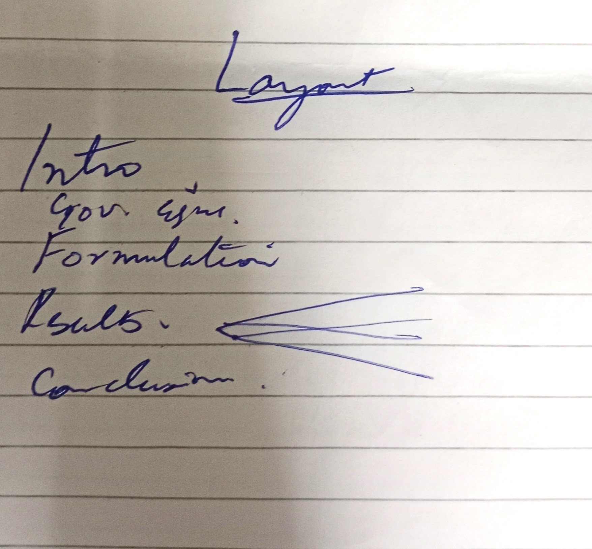
Abstract
So for the abstract I was asked to answer the following questions. What is the problem, why is this problem important, what is the model and the method that I will be using, what has the study found, and finally why does it matter. So in the peice of words given below I tried answering these questions.
This paper predicts the maximum number of pedestrian to enter the Mumbai Sub-Urban trains without causing the phenonmenon of chocking at the doors. It uses fifth order WENO scheme for advection and third order WENO Fast sweep method for Eikonal Eqaution to solve the Hughes' macrospopic multi-crowd model. For a given jam density and the geomtry of the train, maximum number of passengers were estimated that starts chokcing of incoming and outgoing crowd at the entrance of train doors. These results could be used to regulate the number of people in Mumbia Trians to prevent accidents related to crowd mis-managements.
Introduction
So this section would answer the following questions. Why is the problem important and it's context. Then what has already been done? What is missing? and finally what does our paper do?
The Mumbai Suburban Railway is one of the busiest commuter rail systems in the world.[s].
References
- A continuum theory for the flow of pedestrians (Original Paper on the Hughe's Pedestrian Flow)
- Revisiting Hughes’ dynamic continuum model for pedestrian flow and the development of an efficient solution algorithm (Paper with Railway Station Problem)
- Capturing stochastic variabilities in pedestrian flows: A dynamic continuum modeling approach (Paper solving the same railway station problme but with some other method)
- A FAST SWEEPING METHOD FOR EIKONAL EQUATIONS (Original Paper on the Fast sweep)
- Efficient Implementation of Weighted ENO Schemes (Original paper on the WENO)
- Brief of finite volume WENO method (An interpretation on the WENO method)